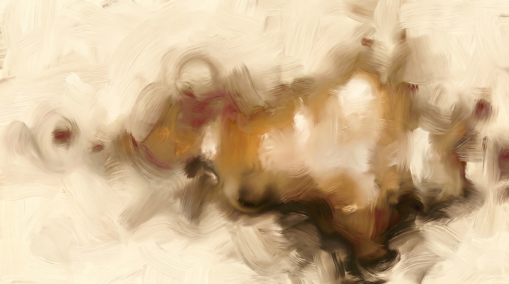
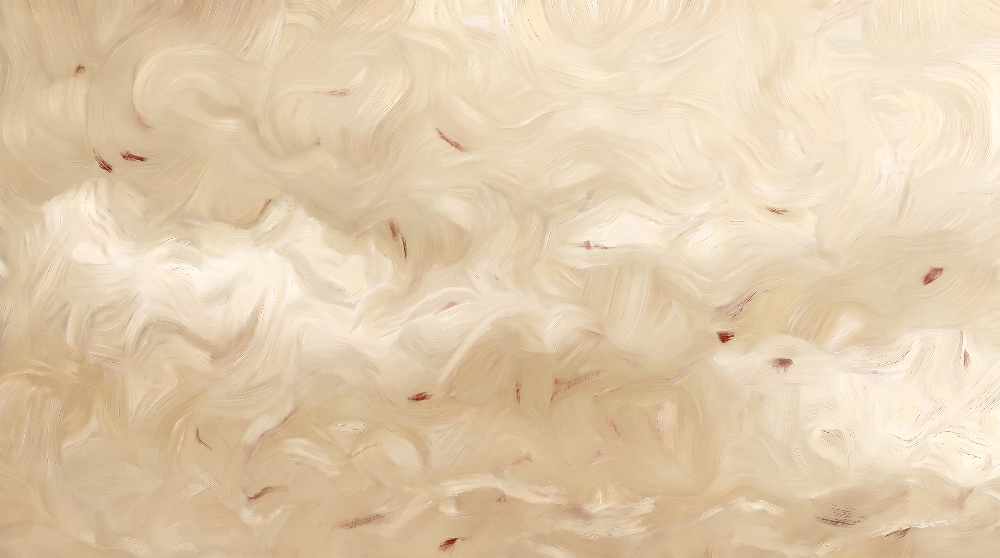
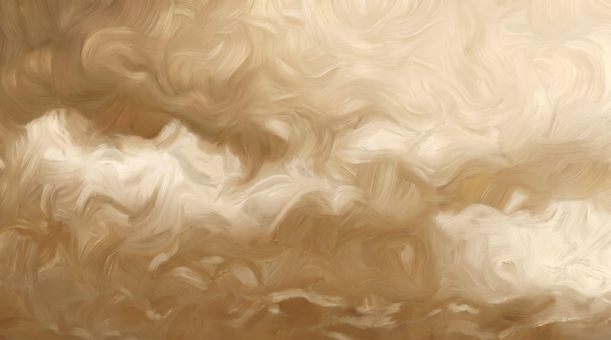

Accent décoratif signature
Bronze de Fresnel patiné
--color-ocre#8C6B3CAccent décoratif signature, traits ornementaux, filets.
Spécifications visuelles pour les équipes design et engineering : tokens, composants atomiques, règles d'usage. Complète le brand book par tout ce qui est nécessaire pour reproduire l'identité de manière conforme.
14 tokens couleur en registre crème diurne. Fond dominant parchemin, texte encre, foyer chaud bronze et bordeaux. Aucune teinte bleue — fidélité au registre chaud.
Foyer chaud ponctuel, dominante parchemin diurne, aucune teinte bleue.
#8C6B3C et bordeaux #7A1F2B en points lumineux.#7A1F2B → #65171F ; pas de dégradés plats colorés sur les fonds.Accents décoratifs et signal (§02.1, §02.2), neutres et surfaces (§02.3). Noms et hex recopiés du design specs.
--color-ocre#8C6B3CAccent décoratif signature, traits ornementaux, filets.
--color-rule#C9B89AFilets fins, séparateurs, détails de finition.
--color-dark#5C4A38Section inversée, blocs sombres chauds.
--color-cta#7A1F2BAccent fort, CTA, foyer chaud signal.
--color-ocre#8C6B3CAccent secondaire, rappel décoratif.
--color-cta-deep#65171FOmbres et dégradés de CTA, profondeur du foyer chaud.
--color-paper#EDE6D6Fond dominant diurne.
--color-paper-warm#E4DAC5Surfaces de cartes.
--color-paper-deep#D9C7A8Surfaces secondaires, zones de regroupement.
--color-secondary#3A3128Texte secondaire / éléments structurels sombres.
--color-primary#1F1A14Neutre le plus dense, texte principal.
Tokens d'appui du :root non détaillés en swatch (dérivés de la matière sombre / texte) :
--color-dark-deepest #4A3B2C (profondeurs de la section sombre),
--color-cream-on-dark #F5F0E0 (texte crème sur section sombre),
--color-text-faint #6B5C46 (brun moyen sableux — texte tertiaire / méta, ≈5:1).
Quatre rôles fonctionnels (§02.4). Pas de bleu pour Info — fidélité au registre chaud.
| Rôle | Hex | Couleur | Usage |
|---|---|---|---|
| Success | #4E6B3E | Vert de veille terreux | État verrouillé / validé. |
| Error | #7A1F2B | Bordeaux Secteur Rouge | Erreur, alerte critique. |
| Warning | #8C6B3C | Bronze de Fresnel | Attention, état intermédiaire. |
| Info | #3A3128 | Granit de Tour Diurne | Neutre — pas de bleu, fidélité au registre chaud. |
Quatre teintes dédiées, sélectionnées pour la distinction sur fond parchemin (§02.5). Ordre d'usage par priorité de série ; aucune teinte bleue pour préserver le territoire.
| Ordre | Hex | Teinte | Rôle |
|---|---|---|---|
| 1 | #1F1A14 | encre | Série principale. |
| 2 | #8C6B3C | bronze | Deuxième série. |
| 3 | #7A1F2B | bordeaux | Valeur d'alerte / foyer. |
| 4 | #4E6B3E | vert veille | État validé. |
| Combinaison | Ratio | Conformité |
|---|---|---|
Encre #1F1A14 / Parchemin #EDE6D6 | ≈14 : 1 | Largement supérieur à AAA |
Méta #6B5C46 (brun sableux) / Parchemin | ≈5 : 1 | AA texte normal et large |
Bordeaux #7A1F2B / Parchemin | ≈7 : 1 | Lisible (en CTA : texte parchemin sur bordeaux) |
Interdictions sourcées des règles explicites §02 et §04.3.
Pairing à 2 familles : Gloock (display, serif éditorial) × JetBrains Mono (body + données, mono technique). Contraste structurel serif × mono, faible risque AI-slop. 8 tailles dans le type scale.
Deux familles strictement (§03.1). Jamais de Gloock sous lg —
les empattements perdent leur lisibilité en petit corps (§03.3).
'Gloock', 'Georgia', serifSerif éditorial à empattements affirmés, porte l'autorité documentaire et les titres-phares. Usage : titres hero, titres de section, chiffres-clés éditoriaux — partout où l'autorité et le caractère priment.
'JetBrains Mono', ui-monospace, monospaceMono technique instrumental, unifie corps de texte et données dans un registre instrumental-marin. Usage : paragraphes, libellés, métadonnées, valeurs chiffrées, code et tokens.
8 tailles canoniques (§03.2). Hero monte jusqu'à 8vw — disproportion assumée du calibrage A=3.
| Famille | Rôle (§03.3) |
|---|---|
| Gloock | Titres hero, titres de section, chiffres-clés éditoriaux — partout où l'autorité et le caractère priment. Jamais sous lg. |
| JetBrains Mono | Paragraphes, libellés, métadonnées, valeurs chiffrées, code et tokens. |
| Paramètre | Display (Gloock) | Body (JetBrains Mono) |
|---|---|---|
| Line-height | 1.05–1.15 sur titres | 1.5–1.65 (le mono a besoin d'air) |
| Letter-spacing | ≈ -0.01em sur grands titres | neutre |
| Max-width de lecture | — | 62–68 caractères (≈34rem) pour les blocs de texte courant |
Interdictions sourcées des règles explicites §03.1 et §03.3.
lg — les empattements perdent leur lisibilité en petit corps (§03.3).Grille de rythme base 8px (unité u), suite quasi-Fibonacci. Système d'arrondis sobre 3–5px, aucune pilule — les angles quasi-vifs renforcent le registre instrumental.
Base 8px (unité u). Suite quasi-Fibonacci pour un rythme à la fois dense et
respirant (§04.5). Tokens d'espacement du :root.
Le :root étend l'échelle au-delà du design specs §04.5 pour les besoins de la grille
modulaire : --space-3xs 4px, --space-2xs 8px, --space-3xl 168px (21u),
--space-4xl 240px (30u). Tous multiples de l'unité 8px.
Le contraste de densité crée le rythme du « faisceau qui balaie » (§09.2).
| Mode | Spacing | Usage |
|---|---|---|
| Aéré · charnière | xl–2xl (64–104px) | Hero et sections-phares — poser le point fixe. |
| Compact · documentaire | xs–sm (12–16px) | Zones documentaires et tableaux — densité d'un carnet de veille. |
3–5px max, aucune pilule (§04.1). Les angles quasi-vifs renforcent le registre instrumental et la « netteté obstinée ».
Pas d'élévation au-delà de --shadow-card — registre sobre (§04.2).
| Token | Composition |
|---|---|
subtle | inset 0 1px 0 highlight crème — séparateurs et filets de relief. |
--shadow-card (md / elevated) | 3 couches brun désaturé : 0 1px 2px + 0 8px 22px + 0 18px 40px. |
--shadow-card-warm (lg) | 2 couches chaudes bordeaux : 0 2px 6px + 0 16px 40px. |
| z-index | base 0 · cartes/sticky 10 · overlays 100 · modales 1000. |
Famille ORNEMENTAL (art déco / blason). Pictogrammes structurés, symétriques, à logique héraldique. Mixte filaire + plages pleines, jamais purement outlined ni purement filled.
Famille ORNEMENTAL (art déco / blason) : pictogrammes structurés, symétriques, à logique héraldique. Style mixte filaire + plages pleines maîtrisées, jamais purement outlined ni purement filled — l'ornement prime sur l'épure froide. Chaque icône se lit comme un emblème de cartouche (§06.1).
| Paramètre | Valeur (§06.2) |
|---|---|
| Stroke width | 1,5–2px constant. |
| Couleur | Bronze #8C6B3C ou Encre #1F1A14. |
| Corner style | Angles vifs à très légèrement adoucis (≤2px), cohérents avec le radius sobre. |
| Finitions décoratives | Filets, sérifs et terminaisons en pointe à la manière des frises déco. |
Symbolique et emblématique plutôt que réaliste : l'icône évoque par le signe codifié (boussole, faisceau, secteur, ancre stylisée) et non par l'illustration littérale. Niveau d'abstraction élevé, lisible à petite taille, mémorisable comme une marque de blason (§06.3).
Vocabulaire instrumental-marin transposé en art déco. Composition centrée et symétrique, foyer chaud bronze/bordeaux en accent ponctuel sur fond parchemin (§06.4).
Wordmark — le nom « jacques » composé en Gloock. Pas de symbole : le mot EST le repère. Les empattements affirmés portent à eux seuls l'autorité documentaire.
Aucun logo figuratif fourni : la marque s'exprime en wordmark — le nom « jacques » composé en Gloock (font display). Pas de symbole : le mot EST le repère (§05.1).
| Lockup | Description (§05.2) |
|---|---|
| Horizontal / principal | « jacques » seul en Gloock, casse basse, sur une ligne. |
| Stacked | « jacques » avec baseline/tagline mono dessous (JetBrains Mono, casse haute espacée). |
| Icon-only | Initiale « j » en Gloock dans un cartouche carré radius 3px, fond Coursive Oxydée #5C4A38 ou bronze — favicons et avatars. |
| Paramètre | Valeur (§05.3) |
|---|---|
| Espace de protection min. | Hauteur du « j » (jambe descendante incluse), appliquée sur les quatre côtés. |
| Taille min. écran | 80px de large. |
| Taille min. impression | 18mm — pour préserver la lisibilité des empattements. |
| Contexte | Traitement (§05.4) |
|---|---|
| Light mode | Wordmark Encre #1F1A14 ou Bronze #8C6B3C sur Parchemin #EDE6D6. |
| Dark mode | Wordmark Parchemin #EDE6D6 ou Bronze #8C6B3C sur Coursive Oxydée #5C4A38. |
| Monochrome | Version pleine en #1F1A14 (positif) ou #EDE6D6 (négatif), aucun dégradé. |
Trois familles : bar, line, donut. Application stricte de la palette data-viz, teintes pleines sur fond parchemin pour la clarté documentaire. Aucune teinte bleue.
| Famille | Style (§07.1) |
|---|---|
| Bar charts | Barres pleines à angles vifs (radius 0–3px), espacées, en teintes data-viz. |
| Line charts | Traits 2px nets, points-relevés marqués (registre carnet de veille). |
| Donuts | Segments à filets de séparation sable #C9B89A, centre annoté en chiffre Gloock. |
| Élément | Spécification (§07.2) |
|---|---|
| Axes | Filet sable #C9B89A 1px. |
| Ticks | Discrets. |
| Grille | Horizontale légère uniquement (verticale supprimée pour l'épure). |
| Labels | JetBrains Mono sm (0.84rem), couleur méta #6B5C46. |
| Origine / lignes-repères | Bronze pour les seuils signifiants. |
Application stricte de la palette data-viz dans l'ordre (§07.3). Aucun dégradé arc-en-ciel ; teintes pleines sur fond parchemin.
| Ordre | Teinte | Rôle |
|---|---|---|
| 1 | #1F1A14 encre | Série principale. |
| 2 | #8C6B3C bronze | Deuxième série. |
| 3 | #7A1F2B bordeaux | Valeur d'alerte / foyer. |
| 4 | #4E6B3E vert veille | État validé. |
| Rôle | Traitement (§07.4) |
|---|---|
| KPI éditoriaux | Gloock pour les chiffres-clés. |
| Tableaux et axes | JetBrains Mono. |
| Alignement | Nombres alignés à droite (tabular), libellés à gauche. |
| Tailles axes | xs / sm. |
| Taille KPI vedette | 2xl–3xl ; valeurs courantes en base. |
Médium pictural — peinture à l'huile brushée, pas de photographie ni de Recraft flat. Ambiance diurne, lumière rasante de phare, sujets naturels marins. Visuels vus en condition réelle ci-dessous.
Médium pictural — peinture à l'huile brushée. Ambiance diurne, lumière rasante de phare, sujets naturels marins (eau, brume, ciel, roche, faisceau) et instruments optiques. Texture de touche visible, matière, profondeur picturale (§08.1).



Color grading aligné sur la palette : dominante parchemin/crème diurne, foyers
chauds bronze #8C6B3C et bordeaux #7A1F2B en points lumineux.
Ombres chaudes en Coursive Oxydée #5C4A38, jamais de bleu froid dominant.
Contraste élevé (A=3), grain pictural (§08.2).


Le « produit » est mis en scène comme un instrument de navigation sur une table de cartographie : lumière directionnelle, fond parchemin texturé, accessoires marins discrets (compas, relevés). Cadrage centré et stable, point fixe — fidèle à la posture du phare (§08.3).
Prompt-type MidJourney (§08.4). Pas de Recraft : le registre est pictural, non flat.
oil painting, brushed impasto texture, diurnal lighthouse light, warm cream and parchment palette, bronze and deep burgundy focal accents, marine instrumental subject, raking directional light, high contrast, painterly depth, no blue cast --ar 16:9 --style raw
Métaphore centrale : le faisceau du phare. Style pictural à l'huile brushée, organique et matiéré — pas de flat ni de 3D. Médium unifié avec la direction photographique.
Métaphore visuelle centrale : le faisceau du phare — un repère fixe dont la lumière structure le paysage sans le recouvrir. Décline cap, portée, secteur, veille : la navigation guidée par un point d'autorité constant (§10.1).
Style pictural à l'huile brushée, organique et matiéré — pas de flat ni de 3D. Touches visibles, lumière picturale, profondeur de matière. Cohérent avec la Direction Photographique (§08), médium unifié (§10.2).



Pas de personnages : le registre est instrumental et paysager. Si une présence humaine est nécessaire, elle reste silhouette lointaine et anonyme (gardien, navigateur), jamais protagoniste illustré — l'instrument et la lumière sont les sujets (§10.3).
Prompt-type MidJourney (§10.5). Pas de Recraft : le registre pictural exclut le flat illustré.
oil painting illustration, brushed texture, lighthouse beam metaphor, structured stable composition, warm parchment and cream palette, bronze and burgundy focal light, marine instrumental scene, painterly impasto, high contrast, no flat vector, no blue cast --ar 3:2 --style raw
Grille 12 colonnes, gouttière 24px, alignement strict sur la grille de rythme 8px. Le contraste de densité crée le rythme du « faisceau qui balaie ».
| Paramètre | Valeur (§09.1) |
|---|---|
| Grille | 12 colonnes. |
| Gouttière | 24px (md). |
| Marges latérales | 64px (xl) desktop / 24px mobile. |
| Conteneur max | ≈ 1200px. |
| Alignement | Strict sur la grille de rythme 8px. |
Hero et sections-phares : très aérées (spacing xl–2xl,
64–104px) pour poser le point fixe. Zones documentaires et tableaux : compactes
(spacing xs–sm, 12–16px) pour la densité d'un carnet de
veille. Le contraste de densité crée le rythme du « faisceau qui balaie » (§09.2).
| Pattern | Description (§09.3) |
|---|---|
| Hero Split | Titre Gloock + chiffre-clé à gauche, visuel pictural à droite. |
| Carnet de Veille | Colonnes denses de relevés mono avec filets sable. |
| Bento Grid | Cartes #E4DAC5 radius 5px, --shadow-card, pour synthèses et tableaux de bord. |
| Niveau | Espacement (§09.4) |
|---|---|
| Entre blocs majeurs | 2xl (104px). |
| Entre sous-blocs | xl (64px). |
| Intra-section | lg (40px). |
| Transitions | Filets bronze ou sable, sans rompre la continuité diurne. |
Trois courbes d'easing nommées, quatre paliers de durée. Règle absolue :
jamais d'ease générique — toujours l'une des courbes nommées.
Jamais d'ease générique — toujours l'une des courbes nommées.
--ease-out-quart, --ease-fresnel ou --ease-in-out-deep (§04.6).| Token | Valeur (§04.6) |
|---|---|
--ease-out-quart | cubic-bezier(.25,1,.5,1) |
--ease-fresnel | cubic-bezier(.22,.68,.28,1) |
--ease-in-out-deep | cubic-bezier(.65,0,.25,1) |
| Palier | Durée | Usage (§04.6) |
|---|---|---|
| fast | 180ms | Micro-interactions. |
| base | 360ms | Transitions standard. |
| slow | 720ms | Révélations, faisceau. |
| auscultation | ≈1200ms | Séquences narratives lentes, balayage du phare. |
Sous @media (prefers-reduced-motion: reduce), toutes les transitions
et animations sont neutralisées. Ce DS applique la règle (voir CSS en tête de document).
ease générique — toujours l'une des trois courbes nommées (§04.6).
Le bloc :root complet, identique au style-tile source. Prêt à
copier-coller dans un projet.
Ce design system utilise des tokens à 1 niveau (semantic uniquement). Pas de couche
primitive en amont (les valeurs sont nommées directement par leur rôle, ex:
--color-ocre plutôt que --bronze-500), pas de couche component
en aval (les composants utilisent les tokens semantic directement, ex: var(--color-cta)
dans le bouton primary plutôt qu'un --button-primary-bg dédié). Ce choix est
cohérent avec une marque mono-thème mono-brand. Pour un theming dark/light ou multi-brand,
il faudrait introduire la couche primitive.
/* === PALETTE — Granit Diurne / Bronze (crème diurne) === */ --color-paper: #EDE6D6; /* Parchemin de List of Lights — fond dominant clair */ --color-paper-warm: #E4DAC5; /* Crème un peu plus chaud — surfaces de cartes */ --color-paper-deep: #D9C7A8; /* Crème assombri — fonds de badge teintés / zébré */ --color-rule: #C9B89A; /* Hairlines / bordures — ton intermédiaire sable */ --color-dark: #5C4A38; /* Coursive Oxydée — section inversée sombre */ --color-dark-deepest: #4A3B2C; /* Brun foncé — profondeurs de la section sombre */ --color-cream-on-dark: #F5F0E0; /* Crème clair pour texte sur la section sombre */ --color-primary: #1F1A14; /* Encre de Carnet de Veille — texte principal */ --color-secondary: #3A3128; /* Granit de Tour Diurne — texte secondaire */ --color-text-faint: #6B5C46; /* Brun moyen sableux — texte tertiaire / méta (≈5:1) */ --color-ocre: #8C6B3C; /* Bronze de Fresnel Patiné — accent décoratif / bordures */ --color-cta: #7A1F2B; /* Bordeaux Secteur Rouge — accent fort (CTA, foyer chaud) */ --color-cta-deep: #65171F; /* Bordeaux plus profond — ombres / dégradés du CTA */ --color-ok: #4E6B3E; /* Vert de veille terreux — état "verrouillé/validé" */ --font-display: 'Gloock', 'Georgia', serif; --font-body: 'JetBrains Mono', ui-monospace, 'SFMono-Regular', monospace; /* alias texte par défaut sur fond clair */ --color-text-primary: var(--color-primary); --color-text-muted: var(--color-secondary); /* === TYPE SCALE === */ --text-2xs: 0.66rem; --text-xs: 0.74rem; --text-sm: 0.84rem; --text-base: 1rem; --text-md: 1.1875rem; --text-lg: clamp(1.35rem, 1.7vw, 1.7rem); --text-xl: clamp(1.9rem, 3vw, 2.6rem); --text-hero: clamp(3.2rem, 8vw, 5rem); /* === SPACING (8px modulaire) === */ --space-unit: 8px; --space-3xs: calc(var(--space-unit) * 0.5); --space-2xs: calc(var(--space-unit) * 1); --space-xs: calc(var(--space-unit) * 1.5); --space-sm: calc(var(--space-unit) * 2); --space-md: calc(var(--space-unit) * 3); --space-lg: calc(var(--space-unit) * 5); --space-xl: calc(var(--space-unit) * 8); --space-2xl: calc(var(--space-unit) * 13); --space-3xl: calc(var(--space-unit) * 21); --space-4xl: calc(var(--space-unit) * 30); /* === RADIUS === */ --radius-sm: 3px; --radius-md: 5px; /* === SHADOWS === */ --shadow-card: 0 1px 2px oklch(0.32 0.020 70 / 0.16), 0 8px 22px oklch(0.30 0.020 70 / 0.13), 0 18px 40px oklch(0.30 0.020 70 / 0.08); --shadow-card-warm: 0 2px 6px oklch(0.32 0.020 70 / 0.16), 0 16px 40px oklch(0.40 0.150 25 / 0.16); --shadow-text: 0 1px 10px oklch(0.97 0.010 90 / 0.45), 0 1px 1px oklch(0.97 0.010 90 / 0.6); /* === TRANSITIONS === */ --ease-out-expo: cubic-bezier(.16, 1, .3, 1); --ease-out-quart: cubic-bezier(.25, 1, .5, 1); --ease-fresnel: cubic-bezier(.22, .68, .28, 1); --ease-in-out-deep: cubic-bezier(.65, 0, .25, 1); --transition-fast: 180ms var(--ease-out-quart); --transition-base: 360ms var(--ease-fresnel); --transition-slow: 720ms var(--ease-in-out-deep);
Bilan : 14 couleurs · 2 fontes · 8 type-scale · 2 radius · 3 shadows · 11 spacing · 7 transitions.